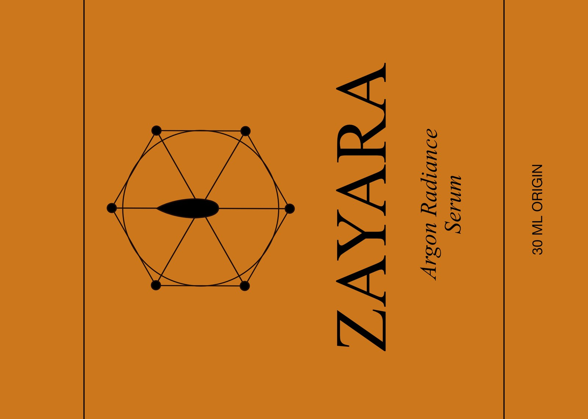
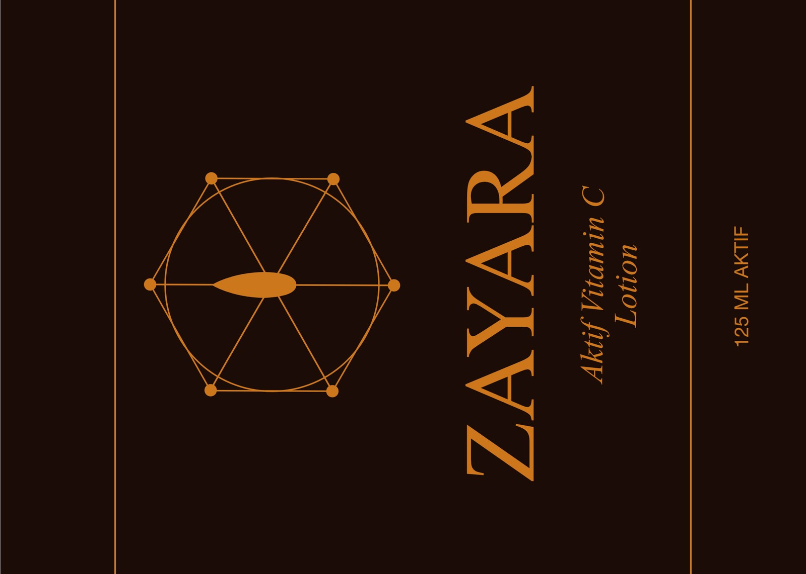
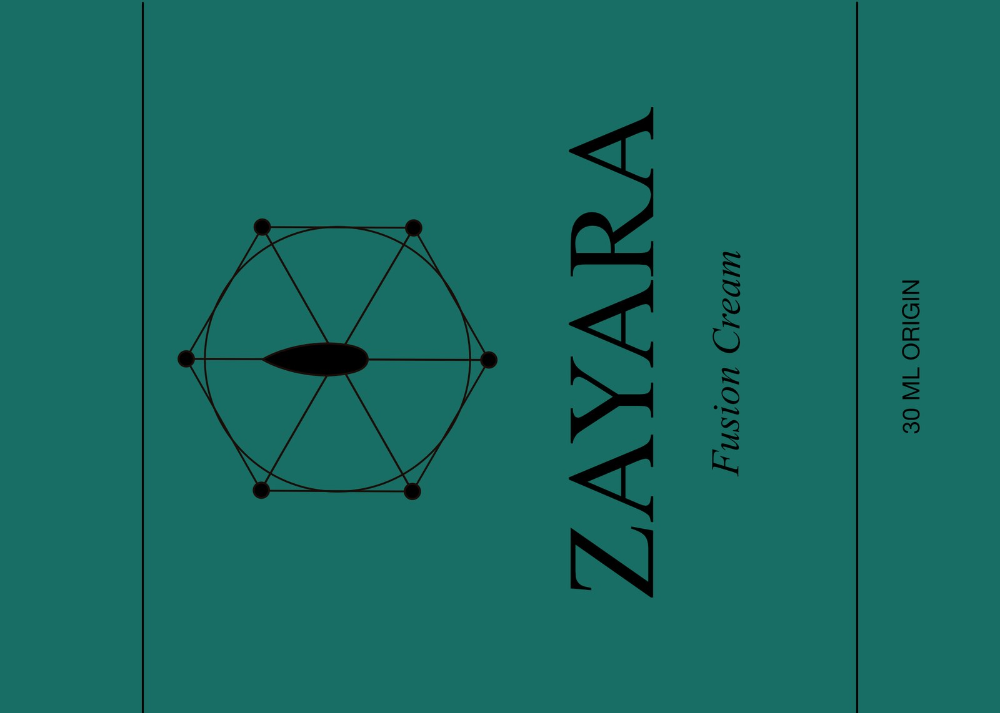
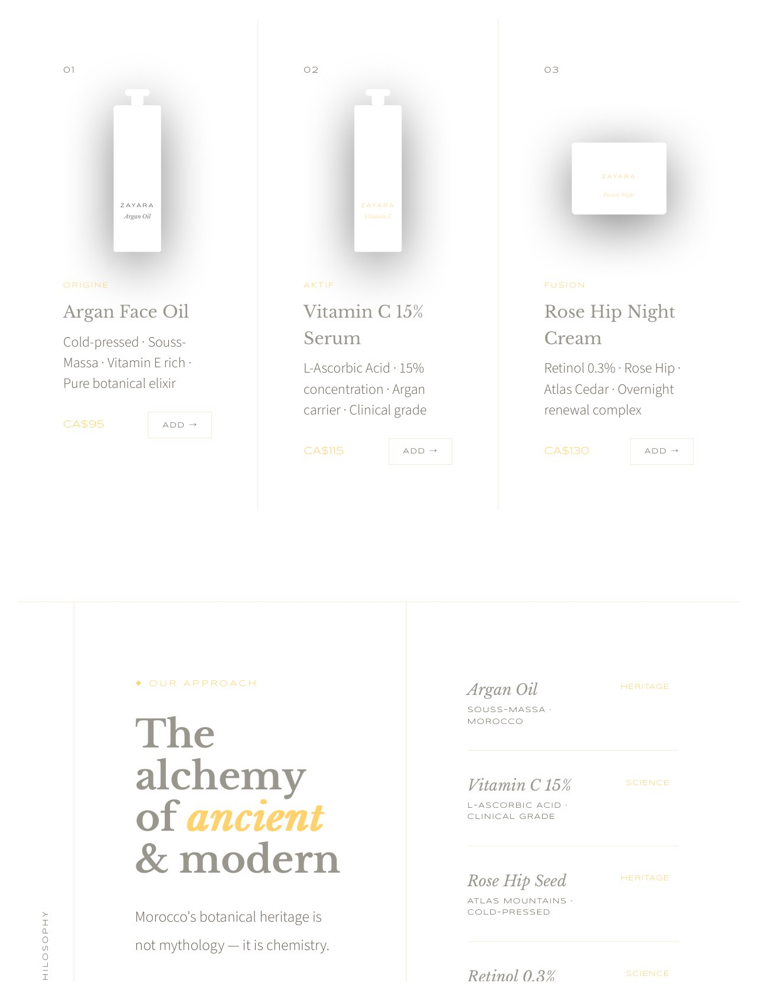
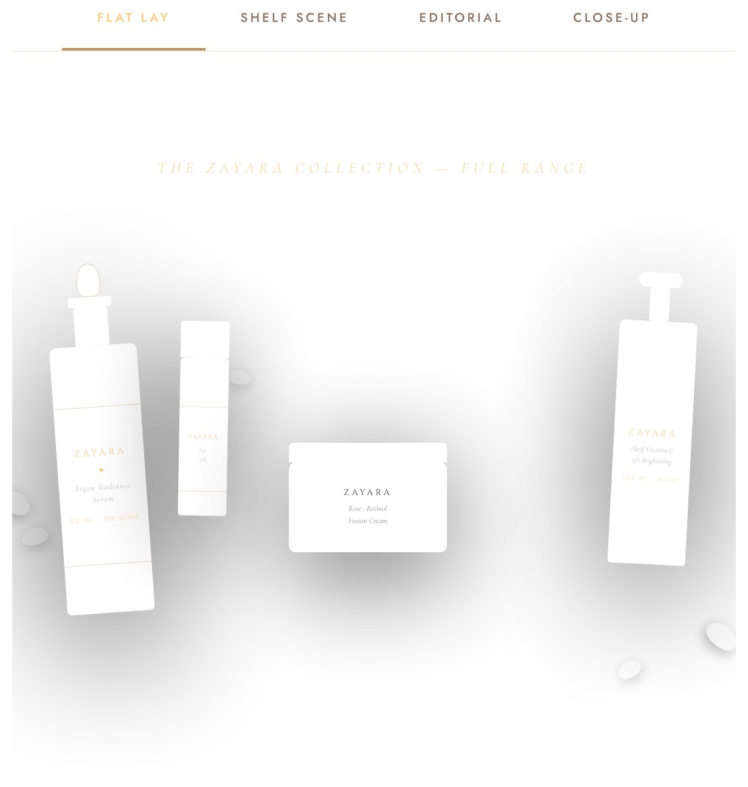

Étude de cas conceptuelle autodirigée · Image de marque · Emballage · Web
Zayara — Suite créative complète
Une identité de marque complète, une présentation investisseurs, un guide de marque, des maquettes de produits et quatre mises en page de site web codées pour un concept de soins haut de gamme — conçus comme un seul système visuel cohérent.
Aperçu et mon rôle
Zayara est une étude de cas conceptuelle autodirigée créée pour explorer comment une marque de soins haut de gamme peut rester cohérente à travers l'identité, l'emballage, les documents investisseurs et le design Web.
« Zayara — Ancient Roots · Modern Science » est un concept de marque de soins de la peau d'inspiration marocaine, alliant huile d'argan, huile de rose musquée et figue de Barbarie à des actifs dosés cliniquement répartis sur trois gammes : Origine, Aktif et Fusion. J'ai développé l'identité, la présentation investisseurs, le guide de marque, les maquettes de produits et quatre mises en page de site web codées comme une suite créative complète et cohérente.
- Développer un logotype, une signature de marque et trois variantes de coloris (foncé, clair, doré) pour toute la gamme de produits.
- Construire un guide de marque de 7 pages — essence, système de logo, palette de couleurs, typographie, direction visuelle, exemples de textes.
- Produire une présentation investisseurs de 9 diapositives avec taille de marché, stratégie de mise en marché et projections financières.
- Réaliser des mises en scène de maquettes produits pour toute la gamme, et coder quatre directions de mise en page de site web distinctes.
- Documenter le système afin que les décisions visuelles se poursuivent clairement à travers l’impression, la présentation et les points de contact numériques.
Phases du projet
-
Phase 1
Système d'identité de marque Réalisé
Logo, palette, typographie
Un logotype en treillis étoilé marocain avec un centre en goutte d'huile, une signature en Cinzel, et trois coloris approuvés — Desert Ink (foncé), Sahara Sand (clair) et Argan Gold (accent) — appliqués sur les étiquettes des trois gammes de produits.
-
Phase 2
Guide de marque, présentation et maquettes Réalisé
Ensemble documentaire complet
Un guide de marque PDF de 7 pages prêt pour l'impression, une présentation investisseurs de 9 diapositives avec taille de marché et projections financières, et des mises en scène de maquettes couvrant toute la gamme Origine/Aktif/Fusion.
-
Phase 3
Directions de mise en page du site web Réalisé
Quatre directions codées
Quatre concepts de mise en page HTML/CSS distincts pour le site e-commerce de Zayara, d'une direction éditoriale minimaliste à une mise en page de style apothicaire plus chaleureuse, chacune portant le système d'identité complet.
-
Phase 4
Présentation du système Documenté
Système de design multiplateforme
Une suite créative documentée qui montre comment l’identité se déploie sur l’emballage, les documents de présentation, les visuels produits et les mises en page numériques.
Brief de design
- Une identité de soins de la peau haut de gamme, alliant héritage et science — « racines anciennes, science moderne » comme tension centrale à résoudre visuellement.
- Une marque crédible et prête au lancement sur tous les points de contact : identité, guide, présentation, visuels produits et site web.
- Un nom et une histoire capables de soutenir une large gamme de produits sur plusieurs lignes et gammes de prix.
Défi de design : Créer une identité haut de gamme crédible qui équilibre l’héritage marocain et la science clinique moderne, puis la décliner avec cohérence dans les étiquettes, les documents de présentation, les visualisations de produits et une direction Web adaptative.
Identité de marque et système d'étiquettes
Le logotype — un treillis étoilé marocain à six pointes avec un centre en goutte d'huile — décliné en trois coloris approuvés, un par gamme de produits : Origine en Argan Gold, Aktif en Desert Ink, Fusion en un sarcelle profond façon Atlas.



Guide de marque
Le guide de 7 pages précisait le système de logo, les règles d'espace de dégagement, la palette de six couleurs avec les valeurs Pantone et d'impression, et une hiérarchie typographique à trois polices — tout ce dont un imprimeur, un développeur ou un second designer aurait besoin sans avoir à poser de questions.

Mise en page du site web et maquettes produits
L'une des quatre directions de mise en page codées — une approche éditoriale d'inspiration apothicaire — accompagnée d'une mise en scène à plat tirée de l'ensemble de visualisation produits, le tout rendu en HTML/CSS pur plutôt que photographié.



Pensée systémique
Zayara a été conçu comme plus qu’un exercice de logo. La même logique visuelle traverse la marque, la hiérarchie des étiquettes, le guide, les documents de présentation, les scènes produits et une direction de site Web adaptative.
- Un langage visuel unique sur tous les points de contact. La typographie, la couleur, l’espacement et l’imagerie sont pensés pour fonctionner ensemble sur l’emballage, dans une présentation et à l’écran.
- Des détails conscients de la production. Le guide présente des règles de dégagement, de couleur et de typographie qui aident un imprimeur, un développeur ou un futur collaborateur à utiliser le système avec constance.
- Une direction numérique utile. Les mises en page HTML/CSS transforment la marque en hiérarchie claire de produits et de contenu, plutôt que de traiter le site comme un exercice visuel isolé.
Ce que démontre cette étude
A. Une cohérence visuelle de bout en bout
Cette étude démontre la capacité à développer et maintenir un système visuel cohérent à travers l’identité, l’emballage, les documents de présentation, la visualisation de produits et les mises en page Web.
B. Une pensée pratique de la production
Le travail est structuré pour être compris et prolongé par des collaborateurs en aval, avec des règles visuelles et des livrables qui soutiennent une vraie production plutôt qu’une image de présentation unique.
Besoin d'un système de marque complet, bien fait dès le départ?
Identité, guide de marque, présentation, visuels produits et site web codé — ajustés à votre budget et à votre échéancier réels dès la première conversation. Discutons-en.